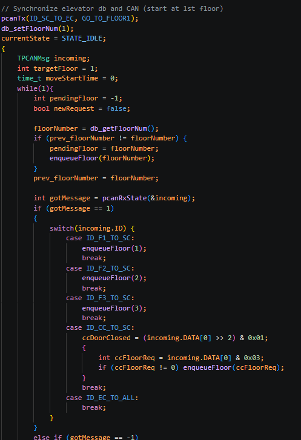
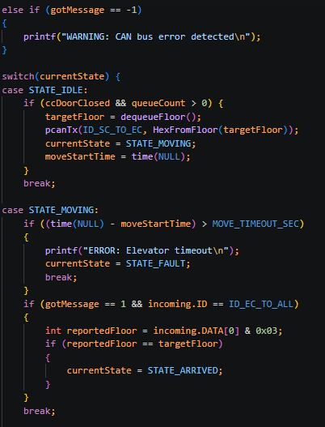

Continued from June 26, 2026:
Important Implementation Details
Several new software features were incorporated into the Supervisor Controller to improve reliability and coordinate communication between all CAN nodes.
Major Improvements
- Initialized the database and synchronized the elevator position during startup.
- Monitored the database for new floor requests generated by the website.
- Implemented a FIFO circular queue to process multiple floor requests sequentially.
- Decoded incoming CAN messages based on each node's CAN identifier.
- Verified that the cab doors were closed before allowing elevator movement.
- Added movement timeout detection to automatically transition into the fault state if the destination was not reached within the expected time.
- Compared the reported elevator position with the requested destination to determine when the elevator had successfully arrived.
Testing
Verified successful compilation after integrating the new helper functions and FSM logic. Additional CAN communication testing will be completed once the Raspberry Pi and STM32 are connected.
Supervisor Controller Implementation


Problems Encountered
Encountered several integration issues while configuring the CAN controller and verifying message transmission between nodes.
Next Steps
- Connect STM32 controller.
- Verify queue operation.
- Test complete FSM transitions.